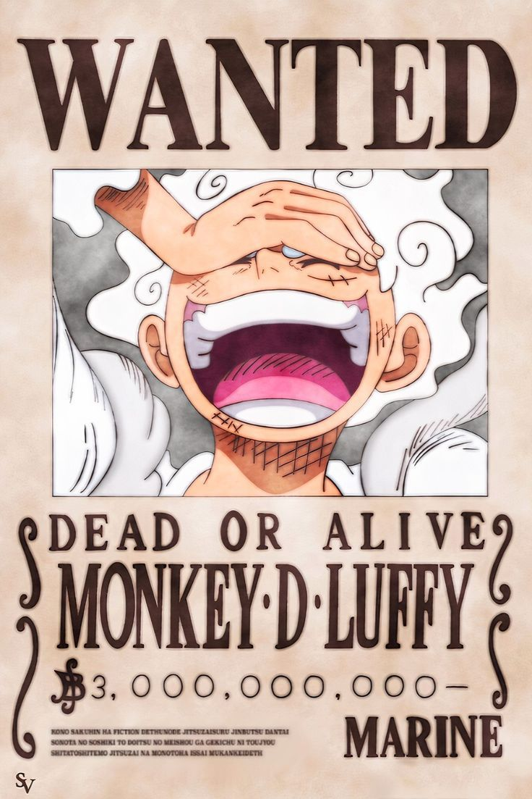

Ce que fait SpotyBrook
- Zéro pub
- Les pubs sont enlevées : ta musique ne s’arrête jamais pour une annonce.
- Pochettes en carrousel
- Fais tourner les pochettes de ta playlist : le titre voisin se lance tout seul.
- Mode One Piece
- Clique sur le logo : fonds One Piece et transition avec Brook et son Yohoho.
- Statut Discord
- Montre ce que tu écoutes sur ton profil. Tu l’actives ou le coupes dans les réglages.
- Télécommande sur téléphone
- Scanne le QR code des réglages et pilote la musique de ton PC depuis ton téléphone.
- Playlists par lien
- Colle le lien d’une playlist : SpotyBrook récupère les titres et leurs pochettes.
- Mini-lecteur et raccourcis
- Win + J ouvre le mini-lecteur. Tu choisis tes propres raccourcis dans Réglages, Touches.

Un mode pour les fans de One Piece
Un clic sur le logo change l’ambiance de l’appli : fonds One Piece, pochettes en avis de recherche et une transition avec Brook.
Tu peux revenir au style classique quand tu veux.
Installer SpotyBrook
- Télécharge l’installateur. Le fichier s’appelle SpotyBrook_Setup_v328.14.exe, sur la page de la dernière version.
- Double-clique dessus. Si Windows affiche « Windows a protégé votre ordinateur », clique sur Informations complémentaires, puis sur Exécuter quand même.
- Laisse l’installation se terminer. Il faut une connexion internet. Si Python manque sur ton PC, l’installateur te propose de l’installer.
- Connecte-toi à Spotify quand la fenêtre s’ouvre. SpotyBrook démarre tout seul.
Cet avertissement de Windows apparaît parce que l’installateur n’est pas encore signé par un éditeur reconnu. Pour désinstaller : Paramètres Windows, Applications, SpotyBrook.